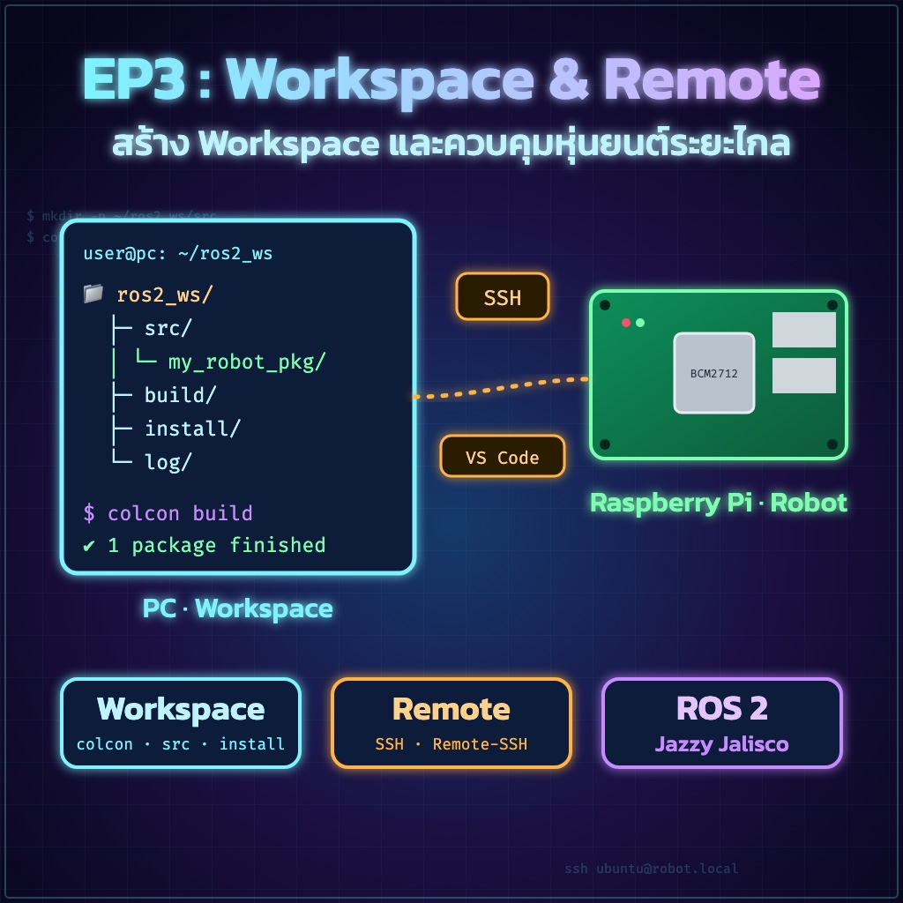
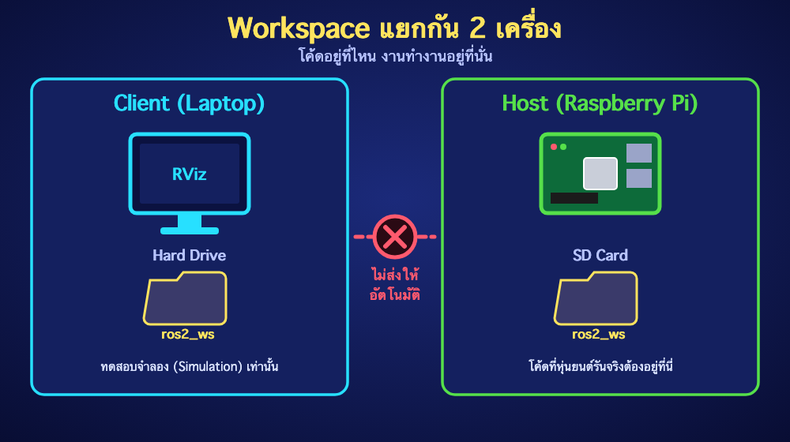
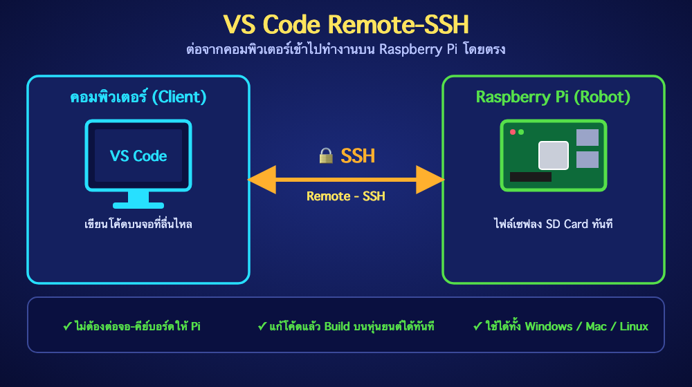
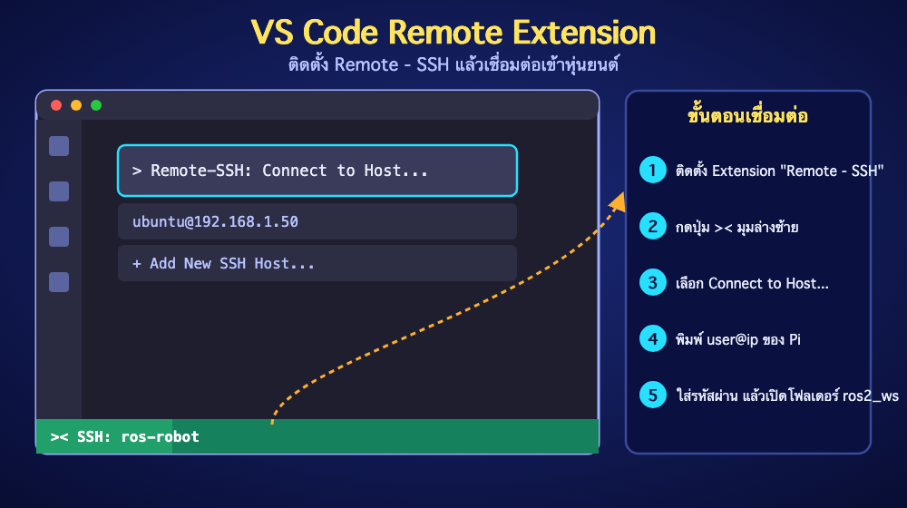

"เข้าใจโครงสร้างพื้นที่ทำงาน และการเขียนโค้ดแบบ Live บนหุ่นยนต์"
โค้ดที่เขียนที่นี่ จะถูกเก็บไว้ใน Hard Drive ของคอมพิวเตอร์ ใช้สำหรับทดสอบจำลอง (Simulation) เท่านั้น
โค้ดที่ต้องการให้หุ่นยนต์วิ่งจริง ต้องถูกเก็บไว้ใน SD Card ของ Raspberry Pi เท่านั้น

เรามีทางเลือก 2 ทางในการพัฒนาโปรเจกต์ครับ:
ถ้า Raspberry Pi ยังไม่พร้อม หรือยังไม่ได้ลงระบบ ให้เขียนและทดสอบบนคอมพิวเตอร์ไปก่อน
จากนั้นค่อยใช้คำสั่ง scp หรือแฟลชไดร์ฟก๊อปปี้ไปวางที่หุ่นยนต์ภายหลัง
ใช้โปรแกรม Visual Studio Code ติดตั้งส่วนขยาย "Remote - SSH" เพื่อเชื่อมต่อจากคอมพิวเตอร์เข้าไปยัง Raspberry Pi โดยตรง


พื้นที่ทำงานของ ROS 2 จะใช้ระบบที่เรียกว่า colcon โดยเราต้องสร้างโฟลเดอร์หลักขึ้นมาดังนี้:
"แหล่งรวมโค้ดต้นฉบับ"
📍 จุดเดียวที่คุณต้องแก้ไข
โค้ด Python/C++ ของเราจะอยู่ที่นี่ทั้งหมด
"ไฟล์ระบบที่เกิดจากการคอมไพล์"
ห้ามแก้ไขไฟล์ในโฟลเดอร์เหล่านี้ด้วยตัวเอง เพราะระบบจะสร้างขึ้นใหม่ทุกครั้งที่สั่ง build
1 ต้อง colcon build ที่ Root เท่านั้น
ห้ามสั่ง build ภายในโฟลเดอร์ src หรือโฟลเดอร์ย่อยเด็ดขาด
2 ต้อง Source ไฟล์หลัง Build ทุกครั้ง
เพื่อให้ระบบ ROS รู้ว่ามีโค้ดใหม่หรือ Package ใหม่เกิดขึ้น
💡 เคล็ดลับ: ถ้าเปิด Terminal หน้าต่างใหม่ อย่าลืมสั่ง source ก่อนใช้งานเสมอ!
| คำสั่ง | หน้าที่ |
|---|---|
colcon build |
คอมไพล์โค้ด (สั่งงานที่ Root ของ Workspace เท่านั้น) |
source install/setup.bash |
อัปเดตระบบให้รู้จักโค้ดล่าสุด (สั่งหลัง build เสร็จ) |
ros2 pkg create --build-type ... |
สร้าง Package ใหม่ (ต้องทำภายในโฟลเดอร์ src) |
ros2 run [package] [node] |
สั่งให้หุ่นยนต์เริ่มทำงาน |
"จำไว้ว่า โค้ดอยู่ที่ไหน งานทำงานอยู่ที่นั่น"
หากต้องการให้หุ่นยนต์ฉลาดขึ้น เราต้องส่งโค้ดไปรันที่สมองของมันโดยตรง
การฝึกใช้ Remote-SSH จะช่วยให้อาจารย์และนักเรียนทำงานได้สะดวกขึ้นหลายเท่าตัวครับ